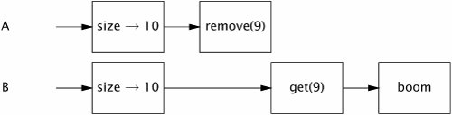

{% include JB/setup %}
{% raw %}
<div>


<a href="21021536.html" class="calibre2"></a><a name="ch05lev1sec1" class="calibre18" id="ch05lev1sec1"></a>
<h3 id="title-IDAQOBDJ" class="docSection1Title">5.1. Synchronized Collections</h3>
<p class="docText1">The <span class="docEmphasis">synchronized collection classes</span> include <tt class="calibre25">Vector</tt> and <tt class="calibre25">Hashtable</tt>, part of the original JDK, as well as their cousins added in JDK 1.2, the synchronized wrapper classes created by the <tt class="calibre25">Collections.synchronizedXxx</tt> factory methods. These classes achieve thread safety by encapsulating their state and synchronizing every public method so that only one thread at a time can access the collection state.</p>
<a name="ch05lev2sec1" class="calibre18" id="ch05lev2sec1"></a>
<h4 id="title-IDAEPBDJ" class="docSection2Title">5.1.1. Problems with Synchronized Collections</h4>
<p class="docText1">The synchronized collections are thread-safe, but you may sometimes need to use additional client-side locking to guard compound actions. Common compound actions on collections include iteration (repeatedly fetch elements until the collection is exhausted), navigation (find the next element after this one according to some order), and conditional operations such as put-if-absent (check if a <tt class="calibre25">Map</tt> has a mapping for key <span class="docEmphasis">K</span>, and if not, add the mapping (<span class="docEmphasis">K</span>,<span class="docEmphasis">V</span>)). With a synchronized collection, these compound actions are still technically thread-safe even without client-side locking, but they may not behave as you might expect when other threads can concurrently modify the collection.</p>
<p class="docText1"><a class="calibre2" href="#ch05list01">Listing 5.1</a> shows two methods that operate on a <tt class="calibre25">Vector</tt>, <tt class="calibre25">getLast</tt> and <tt class="calibre25">delete-Last</tt>, both of which are check-then-act sequences. Each calls <tt class="calibre25">size</tt> to determine <a name="iddle1156" class="calibre18" id="iddle1156"></a><a name="iddle1721" class="calibre18" id="iddle1721"></a><a name="iddle2875" class="calibre18" id="iddle2875"></a><a name="iddle5074" class="calibre18" id="iddle5074"></a><a name="iddle5076" class="calibre18" id="iddle5076"></a>the size of the array and uses the resulting value to retrieve or remove the last element.</p>
<a name="ch05list01" class="calibre18" id="ch05list01"></a><h5 id="title-IDABSBDJ" class="docExampleTitle">Listing 5.1. Compound Actions on a <tt class="calibre33">Vector</tt> that may Produce Confusing Results.</h5><p class="calibre21"><table cellspacing="0" width="90%" border="1" cellpadding="5" class="calibre5"><tr class="calibre6"><td class="calibre28">

<pre class="calibre30">public static Object getLast(Vector list) {
    int lastIndex = list.size() - 1;
    return list.get(lastIndex);
}

public static void deleteLast(Vector list) {
    int lastIndex = list.size() - 1;
    list.remove(lastIndex);
}
</pre><br class="calibre11"/>
</td></tr></table></p>
<p class="docText1">These methods seem harmless, and in a sense they arethey can't corrupt the <tt class="calibre25">Vector</tt>, no matter how many threads call them simultaneously. But the caller of these methods might have a different opinion. If thread <span class="docEmphasis">A</span> calls <tt class="calibre25">getLast</tt> on a <tt class="calibre25">Vector</tt> with ten elements, thread <span class="docEmphasis">B</span> calls <tt class="calibre25">deleteLast</tt> on the same <tt class="calibre25">Vector</tt>, and the operations are interleaved as shown in <a class="calibre2" href="#ch05fig01">Figure 5.1</a>, <tt class="calibre25">getLast</tt> tHRows <tt class="calibre25">ArrayIndexOutOfBoundsException</tt>. Between the call to <tt class="calibre25">size</tt> and the subsequent call to <tt class="calibre25">get</tt> in <tt class="calibre25">getLast</tt>, the <tt class="calibre25">Vector</tt> shrank and the index computed in the first step is no longer valid. This is perfectly consistent with the specification of <tt class="calibre25">Vector</tt>it throws an exception if asked for a nonexistent element. But this is not what a caller expects <tt class="calibre25">getLast</tt> to do, even in the face of concurrent modification, unless perhaps the <tt class="calibre25">Vector</tt> was empty to begin with.</p>
<a name="ch05fig01" class="calibre18" id="ch05fig01"></a><p class="calibre21"><div class="calibre12">
<h5 class="docExampleTitle">Figure 5.1. Interleaving of <tt class="calibre33">Getlast</tt> and <tt class="calibre33">Deletelast</tt> that throws <tt class="calibre33">ArrayIndexOut-OfBoundsException</tt>.</h5>
</div></p><p class="docText1">
</p>
<p class="calibre1"> </p>
<p class="docText1">Because the synchronized collections commit to a synchronization policy that supports client-side locking, <sup class="docFootnote"><a class="calibre2" href="#ch05fn01">[1]</a></sup> it is possible to create new operations that are atomic with respect to other collection operations as long as we know which lock to use. The synchronized collection classes guard each method with the lock on the synchronized collection object itself. By acquiring the collection lock we can make <tt class="calibre25">getLast</tt> and <tt class="calibre25">deleteLast</tt> atomic, ensuring that the size of the <tt class="calibre25">Vector</tt> does not change between calling <tt class="calibre25">size</tt> and <tt class="calibre25">get</tt>, as shown in <a class="calibre2" href="#ch05list02">Listing 5.2</a>.</p><blockquote class="calibre19"><p class="docFootnote1"><sup class="calibre27"><a name="ch05fn01" class="calibre18" id="ch05fn01">[1]</a></sup> This is documented only obliquely in the Java 5.0 Javadoc, as an example of the correct iteration idiom.</p></blockquote>
<p class="docText1">The risk that the size of the list might change between a call to <tt class="calibre25">size</tt> and the corresponding call to <tt class="calibre25">get</tt> is also present when we iterate through the elements of a <tt class="calibre25">Vector</tt> as shown in <a class="calibre2" href="#ch05list03">Listing 5.3</a>.</p>
<p class="docText1">This iteration idiom relies on a leap of faith that other threads will not modify the <tt class="calibre25">Vector</tt> between the calls to <tt class="calibre25">size</tt> and <tt class="calibre25">get</tt>. In a single-threaded environment, this assumption is perfectly valid, but when other threads may concurrently modify the <tt class="calibre25">Vector</tt> it can lead to trouble. Just as with <tt class="calibre25">getLast</tt>, if another thread deletes an element while you are iterating through the <tt class="calibre25">Vector</tt> and the operations are interleaved unluckily, this iteration idiom throws <tt class="calibre25">ArrayIndexOutOfBoundsException</tt>.</p>
<p class="docText1"></p><a name="ch05list02" class="calibre18" id="ch05list02"></a><h5 id="title-IDABXBDJ" class="docExampleTitle">Listing 5.2. Compound Actions on <tt class="calibre33">Vector</tt> Using Client-side Locking.</h5><p class="calibre21"><table cellspacing="0" width="90%" border="1" cellpadding="5" class="calibre5"><tr class="calibre6"><td class="calibre28">
<pre class="calibre30">public static Object getLast(Vector list) {
    <span class="docEmphStrong">synchronized (list)</span> {
        int lastIndex = list.size() - 1;
        return list.get(lastIndex);
    }
}

public static void deleteLast(Vector list) {
    <span class="docEmphStrong">synchronized (list)</span> {
        int lastIndex = list.size() - 1;
        list.remove(lastIndex);
    }
}
</pre><br class="calibre11"/>
</td></tr></table></p>
<a name="ch05list03" class="calibre18" id="ch05list03"></a><h5 id="title-IDA2XBDJ" class="docExampleTitle">Listing 5.3. Iteration that may Throw <tt class="calibre33">ArrayIndexOutOfBoundsException</tt>.</h5><p class="calibre21"><table cellspacing="0" width="90%" border="1" cellpadding="5" class="calibre5"><tr class="calibre6"><td class="calibre28">
<pre class="calibre30">for (int i = 0; i &lt; vector.size(); i++)
    doSomething(vector.get(i));
</pre><br class="calibre11"/>
</td></tr></table></p>
<p class="docText1"><a name="iddle2774" class="calibre18" id="iddle2774"></a><a name="iddle2885" class="calibre18" id="iddle2885"></a><a name="iddle2886" class="calibre18" id="iddle2886"></a><a name="iddle4060" class="calibre18" id="iddle4060"></a><a name="iddle5077" class="calibre18" id="iddle5077"></a>Even though the iteration in <a class="calibre2" href="#ch05list03">Listing 5.3</a> can throw an exception, this doesn't mean <tt class="calibre25">Vector</tt> isn't thread-safe. The state of the <tt class="calibre25">Vector</tt> is still valid and the exception is in fact in conformance with its specification. However, that something as mundane as fetching the last element or iteration throw an exception is clearly undesirable.</p>
<p class="docText1">The problem of unreliable iteration can again be addressed by client-side locking, at some additional cost to scalability. By holding the <tt class="calibre25">Vector</tt> lock for the duration of iteration, as shown in <a class="calibre2" href="#ch05list04">Listing 5.4</a>, we prevent other threads from modifying the <tt class="calibre25">Vector</tt> while we are iterating it. Unfortunately, we also prevent other threads from accessing it at all during this time, impairing concurrency.</p>
<p class="docText1"></p><a name="ch05list04" class="calibre18" id="ch05list04"></a><h5 id="title-IDAC1BDJ" class="docExampleTitle">Listing 5.4. Iteration with Client-side Locking.</h5><p class="calibre21"><table cellspacing="0" width="90%" border="1" cellpadding="5" class="calibre5"><tr class="calibre6"><td class="calibre28">
<pre class="calibre30">synchronized (vector) {
    for (int i = 0; i &lt; vector.size(); i++)
        doSomething(vector.get(i));
}
</pre><br class="calibre11"/>
</td></tr></table></p>
<a name="ch05lev2sec2" class="calibre18" id="ch05lev2sec2"></a>
<h4 id="title-IDAS1BDJ" class="docSection2Title">5.1.2. Iterators and Concurrentmodificationexception</h4>
<p class="docText1"><a name="iddle1471" class="calibre18" id="iddle1471"></a><a name="iddle1472" class="calibre18" id="iddle1472"></a><a name="iddle1492" class="calibre18" id="iddle1492"></a><a name="iddle2233" class="calibre18" id="iddle2233"></a><a name="iddle2300" class="calibre18" id="iddle2300"></a><a name="iddle2876" class="calibre18" id="iddle2876"></a><a name="iddle2877" class="calibre18" id="iddle2877"></a><a name="iddle3076" class="calibre18" id="iddle3076"></a><a name="iddle3239" class="calibre18" id="iddle3239"></a><a name="iddle3240" class="calibre18" id="iddle3240"></a><a name="iddle3241" class="calibre18" id="iddle3241"></a>We use <tt class="calibre25">Vector</tt> for the sake of clarity in many of our examples, even though it is considered a "legacy" collection class. But the more "modern" collection classes do not eliminate the problem of compound actions. The standard way to iterate a <tt class="calibre25">Collection</tt> is with an <tt class="calibre25">Iterator</tt>, either explicitly or through the for-each loop syntax introduced in Java 5.0, but using iterators does not obviate the need to lock the collection during iteration if other threads can concurrently modify it. The iterators returned by the synchronized collections are not designed to deal with concurrent modification, and they are <span class="docEmphasis">fail-fast</span>meaning that if they detect that the collection has changed since iteration began, they throw the unchecked <tt class="calibre25">ConcurrentModificationException</tt>.</p>
<p class="docText1">These fail-fast iterators are not designed to be foolproofthey are designed to catch concurrency errors on a "good-faith-effort" basis and thus act only as early-warning indicators for concurrency problems. They are implemented by associating a modification count with the collection: if the modification count changes during iteration, <tt class="calibre25">hasNext</tt> or <tt class="calibre25">next</tt> throws <tt class="calibre25">ConcurrentModificationException</tt>. However, this check is done without synchronization, so there is a risk of seeing a stale value of the modification count and therefore that the iterator does not realize a modification has been made. This was a deliberate design tradeoff to reduce the performance impact of the concurrent modification detection code.<sup class="docFootnote"><a class="calibre2" href="#ch05fn02">[2]</a></sup></p><blockquote class="calibre19"><p class="docFootnote1"><sup class="calibre27"><a name="ch05fn02" class="calibre18" id="ch05fn02">[2]</a></sup> <tt class="calibre35">ConcurrentModificationException</tt> can arise in single-threaded code as well; this happens when objects are removed from the collection directly rather than through <tt class="calibre35">Iterator.remove</tt>.</p></blockquote>
<p class="docText1"><a class="calibre2" href="#ch05list05">Listing 5.5</a> illustrates iterating a collection with the for-each loop syntax. Internally, <tt class="calibre25">javac</tt> generates code that uses an <tt class="calibre25">Iterator</tt>, repeatedly calling <tt class="calibre25">hasNext</tt> and <tt class="calibre25">next</tt> to iterate the <tt class="calibre25">List</tt>. Just as with iterating the <tt class="calibre25">Vector</tt>, the way to prevent <tt class="calibre25">ConcurrentModificationException</tt> is to hold the collection lock for the duration of the iteration.</p>
<a name="ch05list05" class="calibre18" id="ch05list05"></a><h5 id="title-IDASBCDJ" class="docExampleTitle">Listing 5.5. Iterating a <tt class="calibre33">List</tt> with an <tt class="calibre33">Iterator</tt>.</h5><p class="calibre21"><table cellspacing="0" width="90%" border="1" cellpadding="5" class="calibre5"><tr class="calibre6"><td class="calibre28">

<pre class="calibre30">List&lt;Widget&gt; widgetList
    = Collections.synchronizedList(new ArrayList&lt;Widget&gt;());
...
<span class="docEmphasis">// May throw ConcurrentModificationException</span>
for (Widget w : widgetList)
    doSomething(w);
</pre><br class="calibre11"/>
</td></tr></table></p>
<p class="docText1"><a name="iddle1378" class="calibre18" id="iddle1378"></a><a name="iddle1379" class="calibre18" id="iddle1379"></a><a name="iddle1659" class="calibre18" id="iddle1659"></a><a name="iddle1660" class="calibre18" id="iddle1660"></a><a name="iddle1661" class="calibre18" id="iddle1661"></a><a name="iddle1717" class="calibre18" id="iddle1717"></a><a name="iddle1718" class="calibre18" id="iddle1718"></a><a name="iddle1719" class="calibre18" id="iddle1719"></a><a name="iddle1720" class="calibre18" id="iddle1720"></a><a name="iddle1809" class="calibre18" id="iddle1809"></a><a name="iddle1935" class="calibre18" id="iddle1935"></a><a name="iddle1936" class="calibre18" id="iddle1936"></a><a name="iddle2019" class="calibre18" id="iddle2019"></a><a name="iddle2020" class="calibre18" id="iddle2020"></a><a name="iddle2024" class="calibre18" id="iddle2024"></a><a name="iddle2291" class="calibre18" id="iddle2291"></a><a name="iddle2521" class="calibre18" id="iddle2521"></a><a name="iddle2848" class="calibre18" id="iddle2848"></a><a name="iddle2849" class="calibre18" id="iddle2849"></a><a name="iddle2878" class="calibre18" id="iddle2878"></a><a name="iddle2881" class="calibre18" id="iddle2881"></a><a name="iddle3118" class="calibre18" id="iddle3118"></a><a name="iddle3499" class="calibre18" id="iddle3499"></a><a name="iddle3500" class="calibre18" id="iddle3500"></a><a name="iddle4072" class="calibre18" id="iddle4072"></a><a name="iddle4373" class="calibre18" id="iddle4373"></a><a name="iddle4397" class="calibre18" id="iddle4397"></a><a name="iddle4549" class="calibre18" id="iddle4549"></a><a name="iddle4550" class="calibre18" id="iddle4550"></a>There are several reasons, however, why locking a collection during iteration may be undesirable. Other threads that need to access the collection will block until the iteration is complete; if the collection is large or the task performed for each element is lengthy, they could wait a long time. Also, if the collection is locked as in <a class="calibre2" href="#ch05list04">Listing 5.4</a>, <tt class="calibre25">doSomething</tt> is being called with a lock held, which is a risk factor for deadlock (see <a class="calibre2" href="ch10.html#ch10">Chapter 10</a>). Even in the absence of starvation or deadlock risk, locking collections for significant periods of time hurts application scalability. The longer a lock is held, the more likely it is to be contended, and if many threads are blocked waiting for a lock throughput and CPU utilization can suffer (see <a class="calibre2" href="ch11.html#ch11">Chapter 11</a>).</p>
<p class="docText1">An alternative to locking the collection during iteration is to clone the collection and iterate the copy instead. Since the clone is thread-confined, no other thread can modify it during iteration, eliminating the possibility of <tt class="calibre25">ConcurrentModificationException</tt>. (The collection still must be locked during the clone operation itself.) Cloning the collection has an obvious performance cost; whether this is a favorable tradeoff depends on many factors including the size of the collection, how much work is done for each element, the relative frequency of iteration compared to other collection operations, and responsiveness and throughput requirements.</p>
<a name="ch05lev2sec3" class="calibre18" id="ch05lev2sec3"></a>
<h4 id="title-IDAXOCDJ" class="docSection2Title">5.1.3. Hidden Iterators</h4>
<p class="docText1">While locking can prevent iterators from throwing <tt class="calibre25">ConcurrentModificationException</tt>, you have to remember to use locking everywhere a shared collection might be iterated. This is trickier than it sounds, as iterators are sometimes hidden, as in <tt class="calibre25">HiddenIterator</tt> in <a class="calibre2" href="#ch05list06">Listing 5.6</a>. There is no explicit iteration in <tt class="calibre25">HiddenIterator</tt>, but the code in bold entails iteration just the same. The string concatenation gets turned by the compiler into a call to <tt class="calibre25">StringBuilder</tt>.<tt class="calibre25">append(Object)</tt>, which in turn invokes the collection's <tt class="calibre25">toString</tt> methodand the implementation of <tt class="calibre25">toString</tt> in the standard collections iterates the collection and calls <tt class="calibre25">toString</tt> on each element to produce a nicely formatted representation of the collection's contents.</p>
<p class="docText1">The <tt class="calibre25">addTenThings</tt> method could throw <tt class="calibre25">ConcurrentModificationException</tt>, because the collection is being iterated by <tt class="calibre25">toString</tt> in the process of preparing the debugging message. Of course, the real problem is that <tt class="calibre25">HiddenIterator</tt> is not thread-safe; the <tt class="calibre25">HiddenIterator</tt> lock should be acquired before using <tt class="calibre25">set</tt> in the <tt class="calibre25">println</tt> call, but debugging and logging code commonly neglect to do this.</p>
<p class="docText1">The real lesson here is that the greater the distance between the state and the synchronization that guards it, the more likely that someone will forget to use proper synchronization when accessing that state. If <tt class="calibre25">HiddenIterator</tt> wrapped the <tt class="calibre25">HashSet</tt> with a <tt class="calibre25">synchronizedSet</tt>, encapsulating the synchronization, this sort of error would not occur.</p>
<a name="ch05sb01" class="calibre18" id="ch05sb01"></a><p class="calibre21"><table cellspacing="0" width="90%" border="1" cellpadding="5" class="calibre5"><tr class="calibre6"><td class="calibre28">
<p class="docText1">Just as encapsulating an object's state makes it easier to preserve its invariants, encapsulating its synchronization makes it easier to enforce its synchronization policy.</p>
</td></tr></table></p><p class="calibre1"> </p>
<p class="docText1"></p><a name="ch05list06" class="calibre18" id="ch05list06"></a><h5 id="title-IDADBDDJ" class="docExampleTitle">Listing 5.6. Iteration Hidden within String Concatenation. <span class="docEmphasis">Don't Do this.</span></h5><p class="calibre21"><table cellspacing="0" width="90%" border="1" cellpadding="5" class="calibre5"><tr class="calibre6"><td class="calibre28">

<pre class="calibre30">public class HiddenIterator {
    @GuardedBy("this")
    private final Set&lt;Integer&gt; set = new HashSet&lt;Integer&gt;();

    public synchronized void add(Integer i) { set.add(i); }
    public synchronized void remove(Integer i) { set.remove(i); }

    public void addTenThings() {
        Random r = new Random();
        for (int i = 0; i &lt; 10; i++)
            add(r.nextInt());
        <span class="docEmphStrong">System.out.println("DEBUG: added ten elements to " + set);</span>
   }
}
</pre><br class="calibre11"/>
</td></tr></table></p>
<p class="docText1"><a name="iddle1236" class="calibre18" id="iddle1236"></a><a name="iddle1376" class="calibre18" id="iddle1376"></a><a name="iddle1382" class="calibre18" id="iddle1382"></a><a name="iddle1416" class="calibre18" id="iddle1416"></a><a name="iddle1454" class="calibre18" id="iddle1454"></a><a name="iddle1460" class="calibre18" id="iddle1460"></a><a name="iddle1480" class="calibre18" id="iddle1480"></a><a name="iddle1483" class="calibre18" id="iddle1483"></a><a name="iddle1487" class="calibre18" id="iddle1487"></a><a name="iddle1664" class="calibre18" id="iddle1664"></a><a name="iddle2121" class="calibre18" id="iddle2121"></a><a name="iddle2574" class="calibre18" id="iddle2574"></a><a name="iddle2624" class="calibre18" id="iddle2624"></a><a name="iddle2993" class="calibre18" id="iddle2993"></a><a name="iddle2994" class="calibre18" id="iddle2994"></a><a name="iddle3006" class="calibre18" id="iddle3006"></a><a name="iddle3007" class="calibre18" id="iddle3007"></a><a name="iddle3178" class="calibre18" id="iddle3178"></a><a name="iddle3179" class="calibre18" id="iddle3179"></a><a name="iddle3739" class="calibre18" id="iddle3739"></a><a name="iddle3748" class="calibre18" id="iddle3748"></a><a name="iddle4061" class="calibre18" id="iddle4061"></a><a name="iddle4543" class="calibre18" id="iddle4543"></a>Iteration is also indirectly invoked by the collection's <tt class="calibre25">hashCode</tt> and <tt class="calibre25">equals</tt> methods, which may be called if the collection is used as an element or key of another collection. Similarly, the <tt class="calibre25">containsAll</tt>, <tt class="calibre25">removeAll</tt>, and <tt class="calibre25">retainAll</tt> methods, as well as the constructors that take collections are arguments, also iterate the collection. All of these indirect uses of iteration can cause <tt class="calibre25">ConcurrentModificationException</tt>.</p>
<a href="21021536.html" class="calibre2"></a>
<p class="calibre3"> </p>

</div>

{% endraw %}

